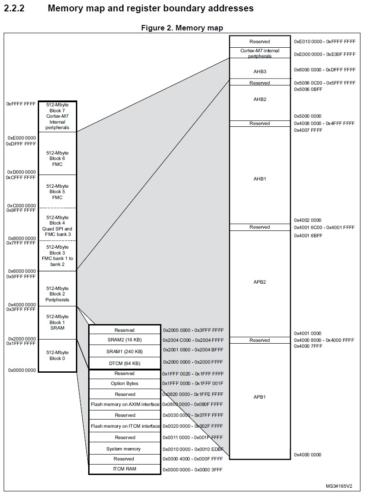

Le noyau Mk implémente un environnement sécurisé qui isole les tâches critiques de l'espace utilisateur non privilégié. L'objectif est de garantir la stabilité et la sécurité du système en cas de défaillance d'une tâche utilisateur ou lors de l'exécution de code arbitraire.
Le modèle de protection offert par Mk est simple. Il crée une barrière de protection entre le monde privilégié et le monde non privilégié. Néanmoins, il n'impose aucune restriction entre les tâches d'un même monde (une tâche privilégiée peut donc corrompre une autre tâche privilégiée par exemple). Il n'y a donc pas d'isolation stricte entre tâches.
Le processeur Cortex-M7 n'implémente pas de MMU. Les mécanismes de protection de Mk reposent donc sur l'utilisation de la MPU (Memory Protection Unit), sur l'attribution de droits aux tâches et sur l'organisation mémoire du processeur.
Cette section explique l'ensemble des mécanismes de protection offerts par Mk ainsi que la méthodologie à utiliser pour communiquer d'un monde à l'autre.
1. Mécanismes matériels du modèle de protection
L'isolation matérielle offerte par Mk repose sur les deux mécanismes suivants :
- ✔La configuration du bit nPRIV lors de chaque changement de contexte pour activer ou non le mode privilégié.
- ✔La configuration de la MPU pour définir les zones mémoires accessibles aux tâches privilégiées et non privilégiées.
Une tâche privilégiée peut accéder à l'ensemble du système. A contrario, une tâche non privilégiée est contrainte et ne peut accèder qu'aux zones autorisées par la MPU. Un accès non autorisé dans une zone protégée déclenche une exception logicielle de type MemFault.
2. Mécanismes logiciels du modèle de protection
L'isolation entre les tâches est aussi renforcée par une surveillance logicielle effectuée lors de chaque appel système. Les appels système étant exécutés en mode privilégié, le noyau s'assure qu'une tâche non privilégiée n'essaye pas d'accéder à des ressources qui lui sont interdites.
La liste ci-dessous décrit l'ensemble des accès ou des opérations non autorisés pour une tâche de type non privilégiée :
- ✔Créer, suspendre, redémarrer, supprimer ou modifier la priorité d'une tâche privilégiée.
- ✔Créer un allocateur mémoire ou une boite de messages pointant vers un espace mémoire privilégié.
- ✔Ecrire dans un espace mémoire privilégié en utilisant une boite de messages partagées.
- ✔Supprimer ou manipuler un objet de synchronisation protégé.
- ✔Récupérer le taux de charge CPU.
Lorsqu'une opération interdite est détectée, le noyau annule l'appel système et déclenche le gestionnaire d'erreur mk_handler_rightFault dont l'implémentation est laissée libre à l'utilisateur.
3. Création des tâches privilégiées
Une tâche privilégiée est créée en spécifiant l'attribut K_MK_TYPE_PRIVILEGED lors de la configuration de la structure T_mkTaskCtrlBlock.
/* Déclaration d'un pointeur de tâche */ T_mkTask* l_task; /* Déclaration d'une structure contenant les informations de la stack */ T_mkStack l_stack; /* Déclaration d'une structure contenant les informations de la tâche */ T_mkTaskCtrlBlock l_taskCtrlBlock; /* Déclaration du buffer où sera stockée la pile de la tâche */ /* Celui-ci est positionné dans une zone privilégiée */ K_MK_PRIVILEGED_MEMORY uint32_t l_privilegedStackBuf [ 512 ]; /* Configuration de la structure l_stack avec les attributs de la pile */ l_result = mk_stack_create ( &l_stack, K_MK_TYPE_DEFAULT, l_privilegedStackBuf, 512 ); /* Configuration de la structure l_taskCtrlBlock */ /* Type : tâche privilégiée non flottante */ /* Pour une tâche privilégiée flottante : K_MK_TYPE_FLOATING_PRIVILEGED */ l_result |= mk_task_setTaskCtrlBlock ( &l_taskCtrlBlock, K_MK_TYPE_PRIVILEGED, K_MK_TASK_ID_MY_TASK, 10, K_MK_NULL ); /* Création de la tâche */ /* Point d'entrée de la tâche : mk_task_privileged */ /* Argument de la fonction : "Hello world !" */ l_result = mk_task_create ( &l_task, &l_stack, K_MK_NULL, &l_taskCtrlBlock, mk_task_privileged, ( T_mkAddr ) "Hello world !" );
Une tâche privilégiée ne peut être créée que depuis une autre tâche privilégiée, un vecteur d'interruption ou depuis le programme principal. Lorsqu'une tâche privilégiée est créée, elle s'exécute avec le bit nPRIV positionné à 0, elle peut donc accéder à toutes les ressources privilégiées du système.
💬
4. Création des tâches non privilégiées
Une tâche non privilégiée peut être créée en spécifiant l'attribut K_
/* ... */ /* Configuration de la structure l_taskCtrlBlock */ /* Type : tâche non privilégiée non flottante */ /* Pour une tâche non privilégiée flottante : K_MK_TYPE_FLOATING */ l_result = mk_task_setTaskCtrlBlock ( &l_taskCtrlBlock, K_MK_TYPE_DEFAULT, K_MK_TASK_ID_MY_TASK, 10, K_MK_NULL ); /* Si aucune erreur ne s'est produite */ if ( l_result == K_MK_OK ) { /* Création de la tâche */ /* Point d'entrée de la tâche : mk_task_non_privileged */ /* Argument de la fonction : "Hello world !" */ l_result = mk_task_create ( &l_task, &l_stack, K_MK_NULL, &l_taskCtrlBlock, mk_task_unprivileged, ( T_mkAddr ) "Hello world !" ); }
Une tâche non privilégiée peut être créée par n'importe quel type de tâche, depuis un vecteur d'interruption ou depuis le programme principal.
5. Fonctionnement de la MPU
La MPU du processeur cortex-M7 est constituée de 8 régions configurables. Chaque région permet d'appliquer une configuration spécifique à une plage de l'espace mémoire (niveau d'accès privilégié ou non, droits en lecture/écriture, politiques de cache, exécution d'instructions autorisée). Ces 8 régions peuvent elles aussi être découpées en 8 sous régions de taille égale pouvant être activée ou non.
La MPU est régie par les règles suivantes :
- ✔La taille d'une région doit être une puissance de 2 (de 32 octets à 4 Go).
- ✔L'adresse de base d'une région doit être alignée sur sa taille.
- ✔Lorsque 2 régions se recouvrent, les règles de la région avec le numéro le plus élevé s'appliquent.
Le noyau configure la MPU au démarrage du système en exécutant la fonction mk_system_mpu_init. La configuration est statique et n'est pas modifiée tout au long de l'exécution du système.
6. Configuration de la MPU
La configuration de la MPU est propre à chaque microcontrôleur. Celle-ci est paramétrée conformément au fichier d'édition de lien et à l'organisation mémoire du MCU :

Les tâches privilégiées utilisent le pointeur de pile PSP. Leur contexte reste protégé par la MPU vis-à-vis des tâches non privilégiées.